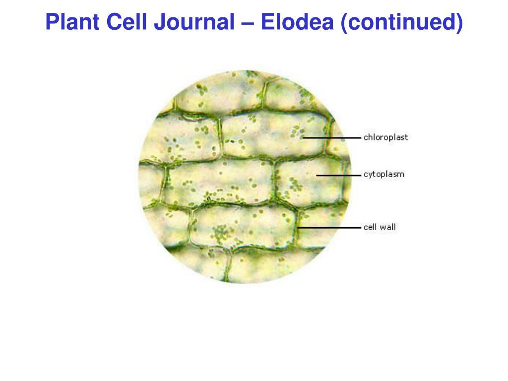
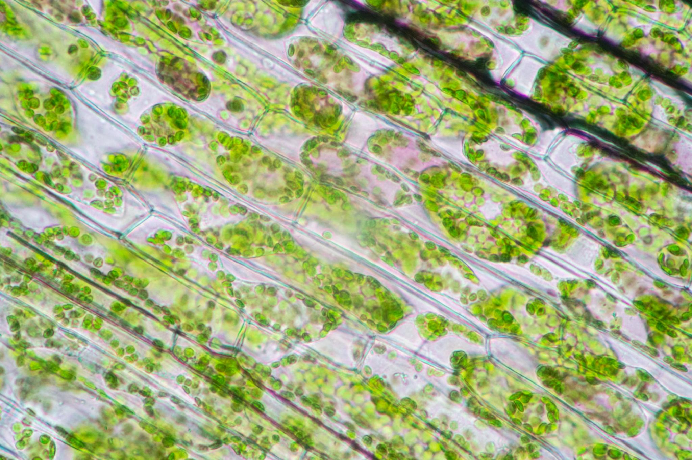
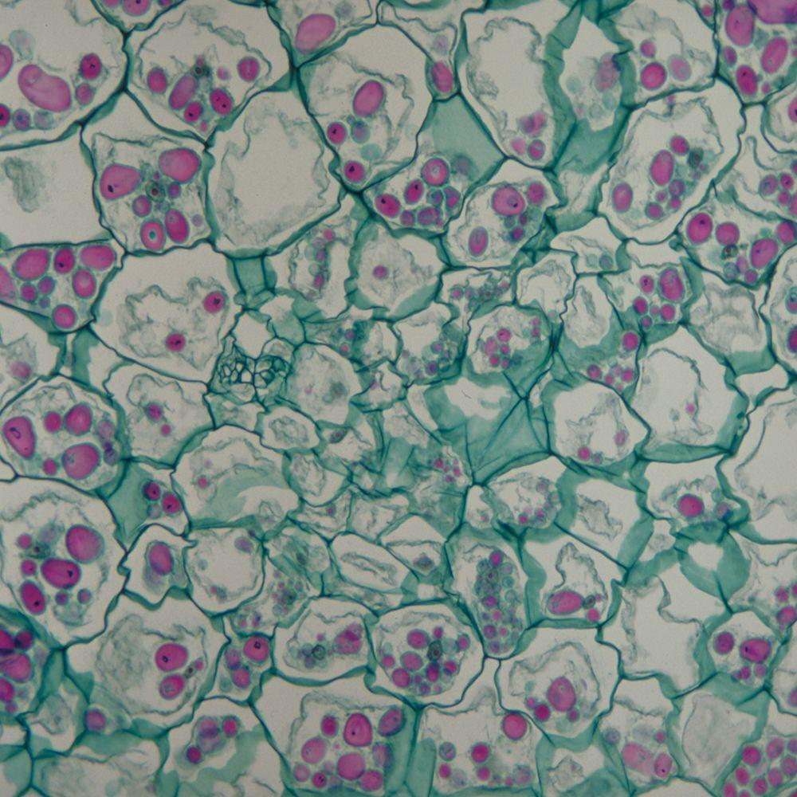

🔬 Bagian-Bagian Mikroskop

Pilih Perbesaran:
Perbesaran yang dipilih: 40×
🧫 Preparat Digital
Pilih kelompok preparat, kemudian pilih preparat yang ingin diamati.
🌿 Pilihan Preparat Tumbuhan

Sel Bawang Merah
Epidermis bawang merah

Sel Elodea
Sel daun Elodea

Sel Hydrilla
Sel daun Hydrilla

Sel Kentang
Sel penyimpan pati


Sel Bawang Merah
Preparat Tumbuhan • Epidermis Bawang Merah
🔎 Bagian yang Dapat Diamati
① Dinding Sel
Memberikan bentuk, perlindungan, dan kekuatan pada sel.
Memberikan bentuk, perlindungan, dan kekuatan pada sel.
② Membran Sel
Mengatur keluar masuknya zat ke dalam dan keluar sel.
Mengatur keluar masuknya zat ke dalam dan keluar sel.
③ Sitoplasma
Bagian sel tempat berlangsungnya berbagai aktivitas sel.
Bagian sel tempat berlangsungnya berbagai aktivitas sel.
④ Inti Sel
Mengandung materi genetik dan mengatur aktivitas sel.
Mengandung materi genetik dan mengatur aktivitas sel.
⑤ Vakuola
Ruang besar dalam sel yang berperan dalam penyimpanan zat.
Ruang besar dalam sel yang berperan dalam penyimpanan zat.
💡
Fokus Pengamatan:
Perhatikan bentuk sel, batas antar sel,
serta struktur yang dapat dikenali
pada gambar mikroskopis.